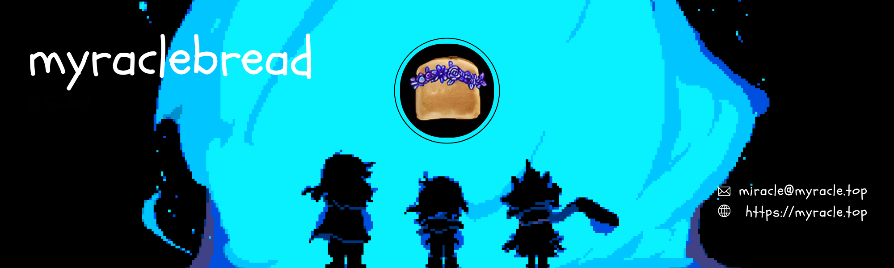

Intro
Hi, I'm an IT student with a strong passion for networking, especially when working with real devices. I enjoy both theory and hands-on practice, and I've built skills through projects and self-learning. I've explored tools like Wireshark, Packet Tracer, Linux, and Raspberry Pi, with programming experience in Python and C++. For my Final Year Project, I developed a Face ID attendance system using Raspberry Pi, which deepened my interest in IoT and problem-solving.
I've also completed Cisco's free courses to strengthen my fundamentals and plan to pursue CCNA as I continue my studies. My goal is to become a network engineer, configuring, maintaining, and designing networks. I'd call myself a problem-solver who enjoys tinkering (budget-friendly for now). Fun fact: I started out leaning toward physics but eventually found my true passion in IT—especially networking.
Looking ahead, I aim to go deeper into networking, explore IoT development, and one day build my own secure home networking lab. You can also check out my works!